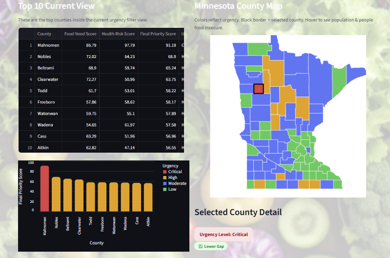
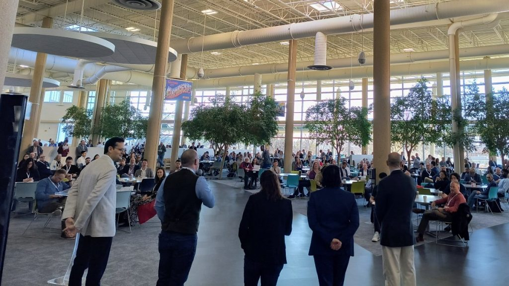
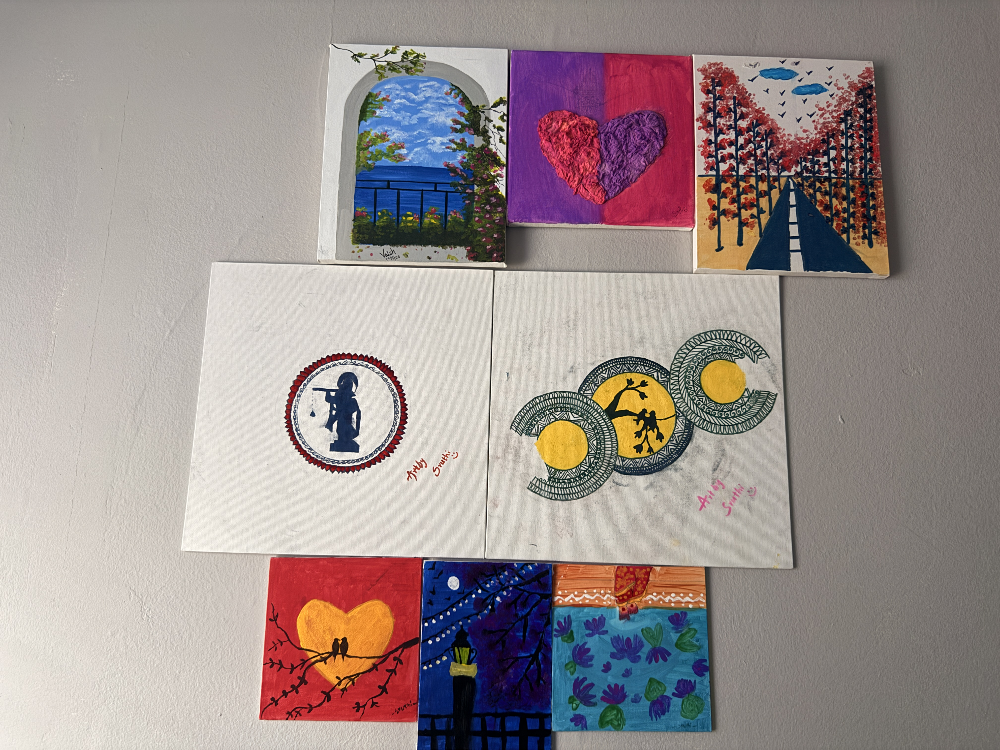

Hi,
I'm Sruthi.
I turn messy operational and public datasets into decision-ready SQL reports, KPI dashboards, BI visuals, prioritization tools, and stakeholder-friendly business insights.
Business-Minded Data Analyst
I am a Data Analyst / BI Analyst / Reporting Analyst with 3+ years of experience in reporting, data cleaning, dashboard development, KPI tracking, and stakeholder analytics, supported by an M.S. in Data Science from the University of St. Thomas. My background in recruitment operations taught me how data quality, reporting speed, and clear business communication improve decisions. I use SQL, Python, Excel, Tableau, Power BI, Snowflake, Databricks, and Streamlit to convert complex datasets into insights that business teams can use.
BI & KPI Reporting
Build dashboards and reports that track performance, identify bottlenecks, and communicate trends to technical and non-technical stakeholders.
Data Cleaning & Modeling
Clean, validate, standardize, and structure datasets for reliable reporting, business intelligence, and analytics workflows.
Business Decision Support
Translate business problems into clear KPIs, dashboard filters, priority scores, and actionable recommendations for faster decisions.
Analytics & BI Projects
Project work focused on business intelligence, public data analytics, dashboard design, reporting automation, predictive modeling, and decision-support storytelling.

Carelio — Minnesota Food Support Prioritization Tool
Python / SQL / Pandas / Streamlit / Power BI
Built an end-to-end analytics tool using public food access, health, insurance, school lunch, and income datasets for all 87 Minnesota counties. Designed a priority scoring model, county rankings, KPI cards, filters, and visual views to help nonprofit and public health stakeholders compare county-level need quickly and support outreach planning.

Snowflake Architecture
Snowflake SQL / Data Modeling
Modeled fiscal-period and business-day tables in Snowflake SQL, incorporating holidays and quarter-end logic to improve recurring finance reporting preparation.

AI Market Analytics
Python / SQL / Tableau
Cleaned and analyzed labor market records across industries to evaluate salary trends, automation risk, remote-work adoption, and job-growth projections.

ML Loan Forecasting
Predictive Modeling
Built a machine learning model to predict loan approval outcomes and evaluate performance using classification metrics, validation, and model interpretation.

Walmart Sales BI
Tableau Visualization
Designed a Tableau BI dashboard to analyze Walmart sales trends, compare business performance, and communicate retail insights through clear visual storytelling.
Data, BI & Operations Impact
Experience connecting business operations, reporting, data quality, stakeholder communication, and leadership into measurable analytics outcomes.
Data & Recruitment Analyst / Team Lead
Avance Consulting | Feb 2021 - Aug 2024- Analyzed candidate and pipeline data to improve visibility into submissions, placement rates, recruiter productivity, and pipeline movement.
- Developed weekly and monthly Excel KPI dashboards that helped managers identify bottlenecks and improve follow-up priorities.
- Translated client requirements and recruiting trends into clear reports for technical and non-technical stakeholders.
- Documented data-entry standards, reviewed weekly updates, and improved ATS data reliability for an 8-member recruiting team.
Certifications
Certifications supporting analytics, business intelligence, data-driven decision making, SQL, and Agile collaboration.
Agile Explorer
Credly Digital Badge | Agile values, Agile practices, Kanban, collaboration, and iterative delivery.
SQL Learning
LinkedIn Learning | SQL querying, relational data, and analytics foundations.
Ask Questions to Make Data-Driven Decisions
Google | Coursera | Business questions, stakeholder needs, and decision-focused analytics.
Foundations: Data, Data, Everywhere
Google | Coursera | Data analytics foundations, data lifecycle, and analytical thinking.
Testimonials
Feedback from instructors and colleagues highlighting technical growth, analytics capability, leadership, reliability, and business communication.
“Sruthi has a very good understanding of data mining and analytics. She has transitioned from recruiting into a very strong technical professional. I have seen her skills firsthand in technical development and she shows strong leadership potential.”
Nathan Crawford
Instructor | Snowflake & Databricks / ML Operations“Sruthi consistently demonstrates strong domain knowledge, strategic thinking, and the ability to deliver results under tight timelines. She leads with clarity and empathy while maintaining productivity and quality standards.”
Rahul Reddy Kalwala
Account Manager | Avance Consulting“As a technical recruiter, Sruthi was reliable in finding qualified talent quickly.”
Mike Macer
Former ColleagueFASTCon & Analytics Community

Learning from FASTCon 2026: Data, AI, Food, Ag & Supply Chain
I participated in FASTCon 2026, hosted by MinneAnalytics at Best Buy HQ in Richfield, Minnesota. The event brought together 600+ professionals across food, agriculture, sustainability, supply chain, data science, and AI.
The conference featured 50+ speakers and highlighted how data science and AI are being applied in real business environments — including supply chain optimization, plant imaging, GenAI, computer vision, and operational analytics. This experience strengthened my interest in using BI, analytics, and AI-driven insights to solve practical business problems.
Hobbies & Creative Side
Outside data analytics and BI work, I enjoy painting and reading. Painting helps me stay creative and detail-oriented, while reading helps me understand emotions, people, communication, and storytelling — skills that also support better stakeholder communication and data storytelling.
Reading Interests
I enjoy emotional, reflective, and people-centered books. Some of the authors and books I like include Ajay K. Pandey and Ravi Mantri.

Education
M.S. in Data Science
University of St. Thomas, St. Paul, MN | Aug 2024 - May 2026- Relevant coursework: Data Analytics & Visualization, SQL, Data Warehousing, Data Lakes, Machine Learning, and AI.
Bachelor of Technology
JNTU, HyderabadAchievements
Recognition and visual proof from your original portfolio, now displayed with more polished spacing, rounded presentation, and hover effects.